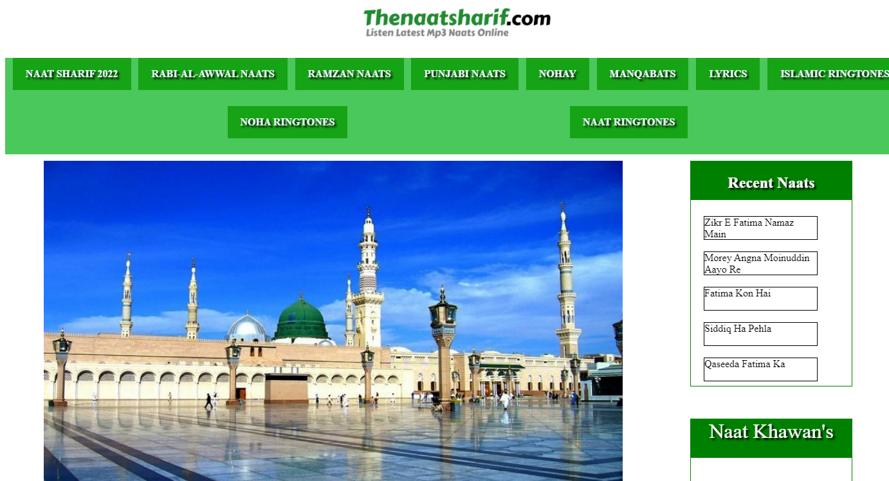

Portfolio



At Digital Marketing, we understand the importance of visibility in the digital world. Our Search Engine Optimization (SEO) services are designed to help your website rank higher in search engine results, driving organic traffic and increasing your online presence. With our expert SEO strategies, we ensure your business gets noticed by the right audience at the right time.
Our SEO process begins with a thorough audit of your website to identify areas for improvement. We analyze factors such as site structure, loading speed, and keyword optimization, ensuring your website is fully optimized for search engines. Our audit reveals the strengths and weaknesses of your site and lays the foundation for a tailored SEO strategy.
We optimize the content and structure of your website to align with the latest SEO best practices. This includes optimizing title tags, meta descriptions, headings, and images to ensure search engines can easily understand and index your content. We also focus on improving the user experience by enhancing site speed, mobile-friendliness, and internal linking.
Effective SEO begins with understanding what your audience is searching for. Our team conducts in-depth keyword research to identify the terms and phrases your target customers are using. We then strategically incorporate these keywords into your content to increase your website’s relevance and rankings for those search queries.
Content is king in the world of SEO. We create high-quality, keyword-optimized content that resonates with both search engines and your target audience. Whether you need blog posts, landing pages, or product descriptions, our content is designed to engage visitors and improve your search engine rankings.
Technical SEO is the backbone of a well-optimized website. We handle all technical aspects, including XML sitemaps, robots.txt files, and structured data markup, to ensure your website is easy for search engines to crawl and index. By fixing errors and improving the technical performance of your site, we help boost its visibility in search results.
If you’re a local business, appearing in local search results is crucial for driving foot traffic and inquiries. Our local SEO services focus on optimizing your online presence for local search queries, improving your visibility on Google Maps, and enhancing your Google My Business profile. We help ensure that your business stands out to nearby customers searching for your services.
Building high-quality backlinks is a critical part of any SEO strategy. We employ ethical, white-hat link-building techniques to acquire links from reputable websites, boosting your website’s authority and improving its search rankings. Our off-page SEO efforts help your site gain credibility in the eyes of search engines.
SEO is not a one-time effort; it’s an ongoing process. We continuously monitor your website’s performance using analytics tools to track traffic, rankings, and conversions. Our regular reports provide insights into how your SEO campaign is progressing and highlight areas for further improvement, ensuring your website maintains its competitive edge.
1. Experienced SEO Experts: Our team has extensive experience in delivering successful SEO strategies for businesses of all sizes.
2. Tailored Approach: We create customized SEO strategies based on your specific industry, goals, and target audience.
3. Proven Results: Our data-driven SEO techniques are designed to deliver long-term results that improve visibility, traffic, and conversions.
3. Transparent Reporting: We provide regular, easy-to-understand reports so you can track the progress of your SEO campaign at all times.